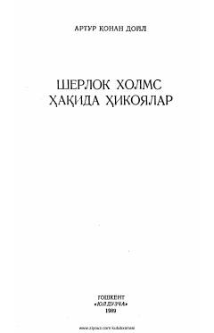

SXMashhur detektiv Sherlok Xolmsning qiziqarli va murakkab jinoyatlarni ochish sarguzashtlari.
Ushbu kitob mashhur detektiv Sherlok Xolms va uning do'sti doktor Uotsonning sarguzashtlari haqidagi hikoyalar to'plamidir. Asarda turli murakkab jinoyatlarning mantiqiy yechimlari va xizmatkorlik faoliyati tasvirlangan.